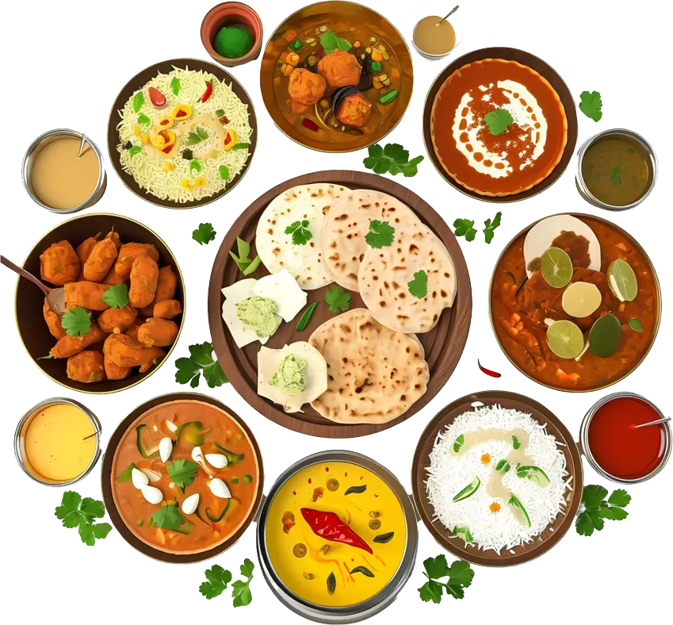

Bestellen Sie jetzt oder reservieren Sie einen Tisch:
0221 - 2412312241
0152 - 18909825
Öffnungszeiten
• Mo – Fr:11:00 – 22:00
• Sa:11:00 – 22:00
• So:11:00 – 22:00
Happy Hour / Mittagstisch von 12:00 bis 15:00 Uhr
Vegetarische Gerichte: 8,90 €
Huhn + Kartoffeln in Currysauce: 10,90 €
Lamm + Kartoffeln in Currysauce: 11,90 €
🚗 Lieferung in der Nähe von Köln-Dellbrück
Wir liefern in Köln-Dellbrück und der näheren Umgebung.
Lieferzeiten
• Mo – Fr:11:00 – 22:00
• Sa:11:00 – 22:00
• So:11:00 – 22:00
Speisen:
Hier finden sie unsere Speisekarte:
Entdecken Sie die Vielfalt und Lebendigkeit der indischen Küche.
Unsere Spezialitäten sind Gerichte aus dem Tandoori Ofen und Fisch.
Der Tandoori-Ofen ist ein traditioneller indischer Lehmofen, der mit hoher Hitze arbeitet
und Speisen besonders zart und aromatisch zubereitet.
Frisch in dem Tandoori Ofen gebackenen Naan-Brote sind die Perfekte ergänzung zu jedem Curry.

Catering:
Kontaktieren sie uns gerne per Mail: info@saffran-restaurant.com
Ob Hochzeit, Geburtstagsfeier oder Betriebsfest – mit unserem Catering bringen wir
echte indische Küche direkt zu dir!